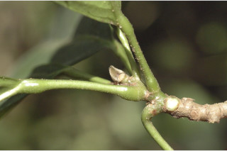
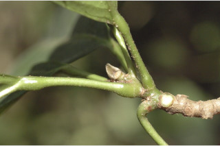
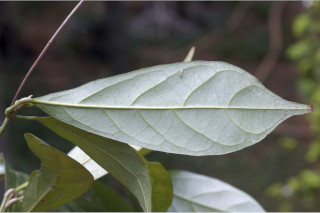
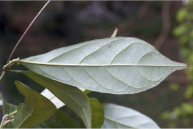
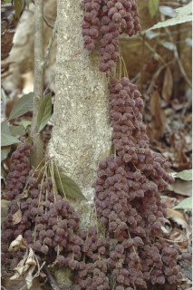
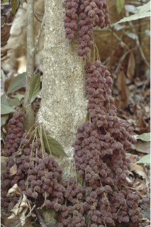

Trees up to 10 m tall.
10 ಮೀ.ವರೆಗೆ ಬೆಳೆಯುವ ಮರಗಳು.
10 മീറ്റര് വരെ ഉയരമുളള മരങ്ങള്.
மரங்கள், 10 மீ. உயரம் வரை வளரக்கூடியது.
Bark grey usually smooth or scaly; blaze light orange.
ತೊಗಟೆ ಬೂದು ಬಣ್ಣದಲ್ಲಿದ್ದು ಸಾಮಾನ್ಯವಾಗಿ ನಯವಾಗಿರುತ್ತದೆ; ಕಚ್ಚು ಮಾಡಿದ ಜಾಗ ತೆಳು ಕಿತ್ತಳೆ ಬಣ್ಣ ಹೊಂದಿರುತ್ತದೆ.
സാധാരണയായി മിനുസമോ ശല്ക്കങ്ങളുളളതോ ആയ നരച്ച നിറത്തിലുളള പുറംതൊലി; വെട്ടുപാടിന് ഇളം ഓറഞ്ച് നിറം.
மரத்தின் பட்டை சாம்பல் நிறமானது பொதுவாக வழுவழுப்பானது அல்லது செதில்கள் போல் உதிருபவை; உள்பட்டை வெளிறிய ஆரஞ்சு நிறமானது.
Branchlets terete, glabrous.
ಕಿರುಕೊಂಬೆಗಳು ದುಂಡಾಗಿದ್ದು ರೋಮರಹಿತವಾಗಿರುತ್ತವೆ.
ഉരുണ്ട, അരോമിലമായ, ഉപശാഖകള്.
சிறிய நுனிக்கிளைகள் குறுக்குவெட்டுத் தோற்றத்தில் வளையமானது, உரோமங்களற்றது.
Leaves simple, alternate, clustered at twig ends; stipules ovate, acute, hairy, caducous; petiole 1.2-3.8 cm long, swollen at both ends, terete, puberulous when young; lamina 7.5-17.8 x 3-7.6 cm, oblanceolate, apex bluntly caudate - acuminate, base cuneate, chartaceous, glabrous, midrib slightly raised above; secondary_nerves 4-8, ascending ; tertiary_nerves slender, distantly percurrent.
ಎಲೆಗಳು ಸರಳವಾಗಿದ್ದು ,ಪರ್ಯಾಯ ಜೋಡನಾ ಮಾದರಿಯಲ್ಲಿದ್ದು ಕುಡಿಕೊಂಬೆಗಳ ತುದಿಯಲ್ಲಿ ಗುಂಪಾಗಿರುತ್ತವೆ; ಕಾವಿನೆಲೆಗಳು ಅಂಡಾಕಾರದಲ್ಲಿದ್ದು ಚೂಪಾಗಿರುತ್ತವೆ ಹಾಗೂ ರೋಮಸಹಿತವಾಗಿರುತ್ತವೆ;ತೊಟ್ಟುಗಳು 1.2 - 3.8 ಸೆಂ.ಮೀ. ವರೆಗಿನ ಉದ್ದವಿದ್ದು, ದುಂಡಾಗಿದ್ದು ಎರಡೂ ತುದಿಯಲ್ಲಿ ಊದಿಕೊಂಡಿರುತ್ತವೆ ಮತ್ತು ಎಳೆಯದಾಗಿದ್ದಾಗ ಸೂಕ್ಷ್ಮ ಮೃದುತುಪ್ಪಳದಿಂದ ಕೂಡಿರುತ್ತವೆ ; ಪತ್ರಗಳು 7.5 -17.8 X3 -7.6 ಸೆಂ ಮೀ. ಗಾತ್ರ, ಬುಗುರಿ-ಭರ್ಜಿಯ ಆಕಾರ, ಮೊಂಡಾಗ್ರವುಳ್ಳ ಬಾಲ ರೂಪಿ - ಕ್ರಮೇಣ ಚೂಪಾಗುವ ಮಾದರಿಯ ತುದಿ, ಬೆಣೆಯಾಕಾರದ ಬುಡ, ಕಾಗದವನ್ನೋಲುವ ಮೇಲ್ಮೈ ಹೊಂದಿದ್ದು ರೋಮರಹಿತ ವಾಗಿರುತ್ತವೆ; ಮಧ್ಯನಾಳ ಪತ್ರದ ಮೇಲ್ಭಾಗದಲ್ಲಿ ಕೊಂಚ ಉಬ್ಬಿರುತ್ತದೆ; ಎರಡನೇ ದರ್ಜೆಯ ನಾಳಗಳು 4 - 8 ಜೋಡಿಗಳಿದ್ದು ಆರೋಹಣ ಮಾದರಿಯಲ್ಲಿರುತ್ತವೆ; ಮೂರನೇ ದರ್ಜೆಯ ನಾಳಗಳು ತೆಳುವಾಗಿದ್ದು ,ಹೆಚ್ಚಿನ ಅಂತರ ಹೊಂದಿದ್ದು ಎಲೆ ದಿಂಡಿಗೆ ಅಡ್ಡವಾಗಿ ಕೂಡುವಂತಹ ಮಾದರಿಯವು.
ലഘുവായ ഇലകള്, ഏകാന്തരക്രമത്തില്, തണ്ടിന്റെ അറ്റത്ത് കൂട്ടമായി അടുക്കിയ വിധത്തിലാണ്; എളുപ്പം പൊഴിഞ്ഞ് വീഴുന്ന, രോമിലമായ, അണ്ഡാകാരത്തിലുളളതും നിശിതാഗ്രമുളളതുമായ അനുപര്ണ്ണങ്ങള്; രണ്ടറ്റവും വീര്ത്ത, ഉരുണ്ടതും, ഇളതായിരിക്കുമ്പോള്, ലഘുരോമിലവുമായ ഇലഞെട്ടിന് 1.2 സെ.മീ മുതല് 3.8 സെ.മീ വരെ നീളം; പത്രഫലകത്തിന് 7.5 സെ.മീ മുതല് 17.8 സെ.മീ വരെ നീളവും 3 സെ.മീ മുതല് 7.6 സെ.മീ വരെ വീതിയും, അപകുന്താകൃതിയും, മുനപ്പില്ലാത്ത ചെറുവാലുളള ദീര്ഘാഗ്രവുമാണ്, പത്രാധാരം ആപ്പാകാരത്തിലാണ്, കടലാസ്പോലത്തെ പ്രകൃതം, അരോമിലം മുഖ്യസിര മുകളില് അല്പ്പം ഉയര്ന്നതാണ്; ആരോഹണ ക്രമത്തിലുളള, 4 മുതല് 8 വരെ ദ്വിതീയ ഞരമ്പുകള്; ത്രിതീയ ഞരമ്പുകള് നേര്ത്തതും അകന്ന പെര്കറന്റ് വിധത്തിലുമാണ്.
இலைகள் தனித்தவை, மாற்றுஅடுக்கமானவை, சிறுகிளைகளின் நுனியில் இலைகள் கூட்டமாக மற்றும் நெருக்கமாக காணப்படும்; இலையடிச்செதில் முட்டை வடிவானது, நுனி கூரியது, உரோமங்களுடையது, எளிதில் உதிரக்கூடியது; இலைக்காம்பு 1.2-3.8 செ.மீ. நீளமானது, காம்பின் இருமுனைகளும் உப்பியது, குறுக்குவெட்டுத் தோற்றத்தில் வளையமானது, துளிர் சிறு உரோமங்களுடையது; இலை அலகு 7.5-17.8 X 3-7.6 செ.மீ., தலைகீழ் ஈட்டி வடிவானது, அலகின் நுனியில் மழுங்கிய வால்-அதிக்கூரியது, அலகின் தளம் ஆப்பு வடிவானது, சார்ட்டேசியஸ், கீழ்பரப்பு உரோமங்களற்றது; மையநரம்பு அலகின் மேற்பரப்பைவிட சிறிது உயர்ந்தது; இரண்டாம் நிலை நரம்புகள் 4-8 ஜோடிகள், அலகின் நுனி நோக்கி வளைந்தவை; மூன்றாம் நிலை நரம்புகள் மெல்லியது, அகன்ற பெர்க்கரண்ட்.
Inflorescence cauliflory; flowers unisexual, dioecious; male inflorescence in clustered racemes on short tubercles all over the trunk, red; female inflorescence in clustered racemes, mostly confined to base of the trunk.
ಹೂಗಳು ಏಕಲಿಂಗಿಗಳಾಗಿದ್ದು ಗಂಡು ಮತ್ತು ಹೆಣ್ಣು ಹೂಗಳು ಪ್ರತ್ಯೇಕ ಸಸ್ಯಗಳಲ್ಲಿರುತ್ತವೆ; ಗಂಡು ಹೂಗಳು ಅಕ್ಷಾಕಂಕುಳಿನಲ್ಲಿರುವ ಪುಷ್ಪದಳ ರಹಿತ ಏಕಲಿಂಗಿ ಹೂಗಳುಳ್ಳ ಕದಿರುಮಂಜರಿಗಳಲ್ಲಿರುತ್ತವೆ;ಹೆಣ್ಣು ಹೂಗಳು ಸಂಕ್ಷೇಪಗೊಂಡ ಕದಿರು ಮಂಜರಿಯಲ್ಲಿರುತ್ತವೆ.
പൂങ്കുലകള് തടിയില് നേരിട്ടുണ്ടാകുന്നു; പൂക്കള് ഏകലിംഗികളാണ്, ഡയീഷ്യസും; ആണ്പൂക്കള്, തടിയിലെമ്പാടുമുളള ചെറുമുഴപ്പുകളിലുണ്ടാകുന്നു, ചുവന്ന റസീം കൂട്ടങ്ങളിലുണ്ടാകുന്നു; പെണ്പൂക്കള്, മിക്കവാറും തടിയുടെ കീഴ്ഭാഗത്തുളള, റസീം കൂട്ടങ്ങളായുണ്ടാകുന്നു.
மஞ்சரி மரத்தண்டில் (காலிஃபுளோரஸ்) தோன்றுபவை; மலர்கள் ஓர்பாலானவை, ஈரகம் கொண்டவை; ஆண் மஞ்சரி கூட்டமான ரெசீம்களாக மரத்தண்டின் அனைத்து பகுதியிலும் உள்ள சிறு கழலைகள் போன்று பகுதியில் உருவாகக்கூடியது, சிவப்பு நிறமானது; பெண்மஞ்சரி கூட்டமான ரெசீம்களாக, பொதுவாக மரத்தண்டின் தளப்பகுதியில் மட்டும் காணப்படுபவை.
Capsule, crimson, globose, beaked, 1.5-2.5 cm across, ribbed, pubescent when young; seeds broad compressed with fleshy aril.
ಸಂಪುಟ ಫಲಗಳು ಕಡುಗೆಂಪು ಬಣ್ಣದವುಗಳಾಗಿದ್ದು,ಗೋಳಾಕಾರದಲ್ಲಿದ್ದು 1.5 ರಿಂದ 2.5 ಸೆಂ.ಮೀ. ಅಡ್ಡಗಳತೆ ಹೊಂದಿದ್ದು ಉಬ್ಬು-ತಗ್ಗುಳ್ಳ ಗರೆಗಳ ಸಮೇತವಿರುತ್ತವೆ ಹಾಗೂ ಎಳೆಯದಾಗಿದ್ದಾಗ ಮೃದುತುಪ್ಪಳವನ್ನು ಹೊಂದಿರುತ್ತವೆ; ಬೀಜಗಳು ಅಗಲವಾಗಿದ್ದು ಸಂಕುಚಿತವಾಗಿರುತ್ತವೆ ಮತ್ತು ಮಾಂಸಲವಾದ ಪತ್ರೆಗಳ ಸಮೇತವಿರುತ್ತವೆ.
കായ, ഇളതായിരിക്കുമ്പോള്, നനുത്ത രോമിലവും, വരമ്പുകളുളളതും കൊക്കുളളതും, 1.5 സെ.മീ മുതല് 2.5 സെ.മീ വരെ കുറുകേയുളള, കടും ചുവപ്പു നിറത്തിലുളള ഗോളാകാര കാപ്സ്യൂള് ആണ്; മാംസളമായ അലുളള വീതിയേറി - പരന്ന വിത്തുകള്.
வெடிகனி (கேப்சூல்), கிரிம்சன் சிவப்பு நிறமானது, கோளவடிவானது, நுனியில் அலகுடையது, 1.5-2.5 செ.மீ. குறுக்களவுடையது, வரித்தழும்புகளுடையது, சிறிய கனியில் உரோமங்களுடையது; விதைகள் அகன்றது, தட்டையானது, பத்ரி (ஏரில்) உடையது.


 



 


 
